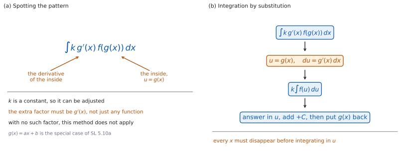

SL 5.10b — Reverse chain rule and substitution（逆連鎖律と置換積分）
- \(\displaystyle\int k\,g'(x)\,f(g(x))\,dx\) の形を見分けられる。
- integration by inspection（見て書く逆連鎖律）で答えを書き、微分して確かめられる。
- 置換積分（\(u = g(x)\)）の手順を、\(du\) まで書いて実行できる。
- 定数 \(k\) を合わせられる。
- \(\displaystyle\int \frac{g'(x)}{g(x)}\,dx\) の形を知っている。
- 答えを\(x\) の式にもどせる。
- \(g'(x)\) がないときは、この方法が使えないと判断できる。
The idea
1. 見分ける形
中身の導関数が、かけ算でくっついている形です（図 1 (a)）。
\[ \int k\,g'(x)\,f(g(x))\,dx \tag{1}\]
\(g(x)\) が「中身」、\(g'(x)\) が「中身の導関数」、\(k\) は定数です。
まず中身を決めてください。 かっこの中、根号の中、\(\sin\) や \(e\) の右にあるものが中身です。次に、それを微分したものが（定数倍のちがいを除いて）かけてあるかどうかを見ます。
中身が \(ax + b\) のときは、SL 5.10a の形です。 \(g'(x) = a\) が定数なので（\(a \ne 0\)）、\(\dfrac{1}{a}\) をかけるだけで済みます。このページは、中身がそれより複雑なときの話です。
2. 逆連鎖律（見て書く）
連鎖律を、逆にたどります（SL 5.6a）。\(F' = f\) となる \(F\) を使うと、\(F(g(x))\) を微分したものが \(g'(x)\,f(g(x))\) です。だから \(g'(x)\) がかかっている形は、\(f\) の原始関数 \(F\) の「中身を \(g(x)\) にした版」にもどせます。
\[ \int g'(x)\,f(g(x))\,dx = F(g(x)) + C, \qquad F'= f \tag{2}\]
やり方は \(2\) 歩です。 ①「\(g'\) がないつもり」で \(f\) を積分する。② 中身を \(g(x)\) のまま書いて、\(+C\) を付ける。
必ず微分して確かめてください。 合っていれば、もとの式にもどります。これが自分でできる検算です。
3. 置換積分（\(u\) を置く）
見て書けないときは、\(u\) を置きます（図 1 (b)）。
\[ u = g(x), \qquad \frac{du}{dx} = g'(x), \qquad du = g'(x)\,dx \tag{3}\]
\(g'(x)\,dx\) のかたまりを、まるごと \(du\) に置きかえるのが要点です。 \(dx\) だけを \(du\) に書き替えるのではありません。
\(x\) が \(1\) つでも残っていたら、まだ積分できません。 すべて \(u\) で書けてから積分します。
最後に \(u = g(x)\) をもどして、\(x\) の式で答えを書きます。 \(u\) が残ったままでは、もとの積分の答えになっていません。
4. 手順
| 手順 | すること |
|---|---|
| \(1\) | 中身 \(g(x)\) を決め、\(u = g(x)\) と書く |
| \(2\) | 式 3 にしたがって、\(du = g'(x)\,dx\) を書く |
| \(3\) | 定数を合わせて、式を \(u\) だけで書き直す |
| \(4\) | \(u\) で積分する（\(+C\) を付ける） |
| \(5\) | \(u = g(x)\) をもどして、\(x\) の式にする |
手順 \(2\) を書かずに進むと、定数を落とします。 答案には \(du = g'(x)\,dx\) の行を残してください。
5. 定数を合わせる
\(g'(x)\) がぴったりでなくても、定数倍なら直せます。 定数は積分の外に出せるからです（SL 5.5）。次の \(3\) つが典型です（表 2）。
| 見えている形 | 中身 \(g(x)\) | \(g'(x)\) | 合わせ方 |
|---|---|---|---|
| \(10x\left(5x^{2}-1\right)^{2}\) | \(5x^{2}-1\) | \(10x\) | そのまま |
| \(x^{4}\left(x^{5}+2\right)^{3}\) | \(x^{5}+2\) | \(5x^{4}\) | \(x^{4} = \dfrac{1}{5} \times 5x^{4}\) |
| \(\dfrac{e^{x}}{e^{x}+3}\) | \(e^{x}+3\) | \(e^{x}\) | そのまま |
\(x\) を含むものは、外に出せません。 \(\dfrac{1}{x}\) や \(\dfrac{1}{2x}\) を積分の外に出すことはできません。
6. \(\dfrac{g'(x)}{g(x)}\) の形
分子が分母の導関数なら、答えは \(\ln\) です。
\[ \int \frac{g'(x)}{g(x)}\,dx = \ln\lvert g(x)\rvert + C \tag{4}\]
式 4 は、式 1 で \(f(u) = \dfrac{1}{u}\) とした場合です。 新しい規則ではありません（SL 5.10a）。
この形が使えるのは、\(g(x) \ne 0\) である区間の中です。 \(g(x) = 0\) になる点では、もとの式も答えも定義されません。
定義域から \(g(x) > 0\) と分かるときだけ、絶対値を外して \(\ln g(x)\) と書けます（SL 5.10a）。分からないときは \(\ln\lvert g(x)\rvert\) のままにしてください。 \(g(x)\) が負になる範囲もあるからです。
分子と分母がこの関係になっている例を \(1\) つ見ておきます。分母を \(g(x) = \cos x\) とすると \(g'(x) = -\sin x\) なので、分子は \(-g'(x)\) です。
\[ \int \frac{\sin x}{\cos x}\,dx = -\ln\lvert\cos x\rvert + C \tag{5}\]
式 5 の負号は、\(-g'(x)\) の \(-\) です。 分子が \(g'(x)\) の\(-1\) 倍だから、答えにも \(-\) が付きます。
7. \(u\) の選び方
\(u\) には「中身」を選びます。 外側ではありません。かっこの中、根号の中、\(\sin\) や \(e\) の右、分数の分母が候補です。
選んだ \(u\) を微分して、その形が式の中にあるか確かめてください。 なければ、その選び方はうまくいきません。
\(g'(x)\) がまったくないときは、この方法は使えません。 たとえば \(\displaystyle\int \left(x^{2}+3\right)^{2}dx\) には \(2x\) がかかっていないので、\(u = x^{2}+3\) と置いても \(dx\) を \(du\) に直せません。この積分は展開して求めます。
中身が \(ax+b\) でもなく、\(g'(x)\) もかかっていないときは、置換以外の手を考えます。 かっこを展開できるものは、展開して項ごとに積分します。\(\displaystyle\int \cos(x^{2})\,dx\) のように展開もできないものは、AA SL の範囲では原始関数を書けません。
逆連鎖律も置換積分も、手で計算する方法です。Paper 1 の項目です。
置換で解いたときは、\(u\) と \(du\) を書いた行を答案に残してください。 見て書いたとき（第 2 節）は、答えを書いてから微分して確かめた行を残します。どちらでも、途中の式が読み手に見える形にします。
もとの被積分関数のグラフと、自分の答えを微分したもののグラフを重ねてかくと、\(2\) つが同じ曲線になるかどうかが見えます。
それでも、答案には手で書いた式が要ります。 電卓は確かめに使ってください。

Why it works
なぜ、\(g'(x)\) がかかっていると積分できるのでしょうか。 連鎖律が、ちょうどその形を作るからです。
\(F' = f\) となる \(F\) があるとき、\(F(g(x))\) を微分すると次のようになります（SL 5.6a）。
\[ \frac{d}{dx}F(g(x)) = F'(g(x)) \times g'(x) = g'(x)\,f(g(x)) \]
右辺が、まさに見分けたい形です。 だから、その積分は 式 2 のとおり \(F(g(x)) + C\) にもどります。
なぜ、\(du = g'(x)\,dx\) と書いてよいのでしょうか。 上の計算を、記号で短く書いたものだからです。
\(u = g(x)\) とすると \(\dfrac{du}{dx} = g'(x)\) です。ここで \(du\) と \(dx\) を別々の数のように動かすのは、連鎖律の計算を短く書くための記法です。分数の計算をしているわけではありませんが、AA SL ではこの書き方でかまいません。
なぜ、\(g'(x)\) がないと使えないのでしょうか。 定数しか外に出せないからです。
\(\displaystyle\int \sqrt{x^{2}+1}\,dx\) で \(u = x^{2}+1\) と置くと \(du = 2x\,dx\) ですが、式に \(2x\) がありません。\(dx = \dfrac{du}{2x}\) と書いても \(x\) が残り、\(x\) を含むものは積分の外に出せません（第 5 節）。
なぜ、\(\displaystyle\int \frac{g'(x)}{g(x)}\,dx\) が \(\ln\) になるのでしょうか。 \(f(u) = \dfrac{1}{u}\) の場合だからです。
\(\dfrac{g'(x)}{g(x)}\) は \(g'(x) \times \dfrac{1}{g(x)}\) です。\(\dfrac{1}{u}\) の原始関数は \(\ln\lvert u\rvert\) なので（SL 5.10a）、答えは \(\ln\lvert g(x)\rvert + C\) になります。
Worked examples
問題文は英語です。意味が理解できなかったら、問題文の下の「日本語訳」を開いてください。解説は日本語です。
どれも電卓なしで解ける形です。
例題 1 Find \(\displaystyle\int 6x\left(x^{2} + 5\right)^{3}dx\).
日本語訳
\(\displaystyle\int 6x\left(x^{2} + 5\right)^{3}dx\) を求めなさい。
中身は \(x^{2} + 5\) です（第 1 節）。これを微分すると \(2x\) で、式には \(6x\) があります。
\[ 6x = 3 \times 2x \]
\(u = x^{2} + 5\)、\(du = 2x\,dx\) と置きます（第 3 節）。
\[ \int 6x\left(x^{2} + 5\right)^{3}dx = 3\int u^{3}\,du = \frac{3u^{4}}{4} + C \]
\(u\) をもどします。
\[ \int 6x\left(x^{2} + 5\right)^{3}dx = \frac{3\left(x^{2} + 5\right)^{4}}{4} + C \]
検算（微分して）。 \(\dfrac{d}{dx}\left(\dfrac{3(x^{2}+5)^{4}}{4}\right) = \dfrac{3}{4} \times 4(x^{2}+5)^{3} \times 2x = 6x(x^{2}+5)^{3}\) ✓ もとの式にもどりました。
検算（\(3\) の出どころ）。 \(3 \times 2x = 6x\) です ✓ この \(3\) が積分の外に出た定数です。
検算（\(x\) にもどしたか）。 答えに \(u\) が残っていません ✓
検算（展開しても合うか）。 \(6x(x^{2}+5)^{3}\) を展開すると \(6x^{7} + 90x^{5} + 450x^{3} + 750x\) で、項ごとに積分すると \(\dfrac{3}{4}x^{8} + 15x^{6} + \dfrac{225}{2}x^{4} + 375x^{2}\) です。答えを展開したものとは定数だけちがいます ✓ 原始関数は定数のちがいを除いて決まるので、これで合っています。
\[u = x^{2} + 5, \quad du = 2x\,dx\] \[\int 6x\left(x^{2} + 5\right)^{3}dx = 3\int u^{3}\,du = \frac{3u^{4}}{4} + C\] \[= \frac{3\left(x^{2} + 5\right)^{4}}{4} + C\]
例題 2 Find \(\displaystyle\int x^{2}\sqrt{x^{3} + 1}\,dx\), for \(x > -1\).
日本語訳
\(x > -1\) のとき、\(\displaystyle\int x^{2}\sqrt{x^{3} + 1}\,dx\) を求めなさい。
中身は根号の中の \(x^{3} + 1\) です。 微分すると \(3x^{2}\) で、式には \(x^{2}\) があります。
\[ u = x^{3} + 1, \qquad du = 3x^{2}\,dx, \qquad x^{2}\,dx = \frac{1}{3}\,du \]
\[ \int x^{2}\sqrt{x^{3} + 1}\,dx = \frac{1}{3}\int u^{\frac{1}{2}}\,du = \frac{1}{3} \times \frac{2}{3}u^{\frac{3}{2}} + C \]
\[ \int x^{2}\sqrt{x^{3} + 1}\,dx = \frac{2}{9}\left(x^{3} + 1\right)^{\frac{3}{2}} + C \]
検算（微分して）。 \(\dfrac{d}{dx}\left(\dfrac{2}{9}(x^{3}+1)^{\frac{3}{2}}\right) = \dfrac{2}{9} \times \dfrac{3}{2}(x^{3}+1)^{\frac{1}{2}} \times 3x^{2} = x^{2}\sqrt{x^{3}+1}\) ✓
検算（係数）。 \(\dfrac{1}{3} \times \dfrac{2}{3} = \dfrac{2}{9}\) ✓
検算（指数）。 \(\dfrac{1}{2} + 1 = \dfrac{3}{2}\) ✓（SL 5.10a）。
検算（定義域）。 \(x > -1\) なら \(x^{3} + 1 > 0\) なので、根号が使えます ✓
\[u = x^{3} + 1, \quad du = 3x^{2}\,dx\] \[\int x^{2}\sqrt{x^{3} + 1}\,dx = \frac{1}{3}\int u^{\frac{1}{2}}\,du = \frac{2}{9}u^{\frac{3}{2}} + C\] \[= \frac{2}{9}\left(x^{3} + 1\right)^{\frac{3}{2}} + C\]
例題 3 Find each of the following.
(a) \(\displaystyle\int x\,e^{x^{2}}\,dx\)
(b) \(\displaystyle\int \frac{2x + 3}{x^{2} + 3x + 1}\,dx\)
日本語訳
次のそれぞれを求めなさい。
(a) \(\displaystyle\int x\,e^{x^{2}}\,dx\)
(b) \(\displaystyle\int \frac{2x + 3}{x^{2} + 3x + 1}\,dx\)
(a) 中身は \(e\) の肩の \(x^{2}\) です。微分すると \(2x\) で、式には \(x\) があります。
\[ u = x^{2}, \qquad du = 2x\,dx, \qquad x\,dx = \frac{1}{2}\,du \]
\[ \int x\,e^{x^{2}}\,dx = \frac{1}{2}\int e^{u}\,du = \frac{1}{2}e^{u} + C = \frac{1}{2}e^{x^{2}} + C \]
(b) 分母を \(g(x) = x^{2} + 3x + 1\) とすると、\(g'(x) = 2x + 3\) です。分子がちょうどそれになっています（第 6 節）。
\[ \int \frac{2x + 3}{x^{2} + 3x + 1}\,dx = \ln\lvert x^{2} + 3x + 1\rvert + C \]
検算（(a) を微分して）。 \(\dfrac{d}{dx}\left(\dfrac{1}{2}e^{x^{2}}\right) = \dfrac{1}{2}e^{x^{2}} \times 2x = x\,e^{x^{2}}\) ✓
検算（(b) を微分して）。 \(\dfrac{d}{dx}\ln\lvert x^{2}+3x+1\rvert = \dfrac{2x+3}{x^{2}+3x+1}\) ✓
検算（(b) の絶対値）。 \(x^{2} + 3x + 1\) は判別式が \(9 - 4 = 5 > 0\) なので、負になる範囲があります ✓ 絶対値を落とせません。
検算（(a) で \(e^{x^{2}}\) の中身）。 答えの肩も \(x^{2}\) のままです ✓ \(u\) が残っていません。
(a) \[u = x^{2}, \quad du = 2x\,dx\] \[\int x\,e^{x^{2}}\,dx = \frac{1}{2}\int e^{u}\,du = \frac{1}{2}e^{x^{2}} + C\]
(b) \[\int \frac{2x + 3}{x^{2} + 3x + 1}\,dx = \ln\lvert x^{2} + 3x + 1\rvert + C\]
例題 4 Consider \(\displaystyle\int \sin^{3}x\,\cos x\,dx\).
(a) Find the integral.
(b) Explain why \(u = \sin x\) works here, but the same substitution does not help for \(\displaystyle\int \sin^{3}x\,dx\).
日本語訳
\(\displaystyle\int \sin^{3}x\,\cos x\,dx\) について考えます。
(a) この積分を求めなさい。
(b) ここで \(u = \sin x\) はうまくいくのに、\(\displaystyle\int \sin^{3}x\,dx\) には同じ置きかえが役に立たない理由を説明しなさい。
(a) \(\sin^{3}x\) は \((\sin x)^{3}\) のことです。中身を \(\sin x\) とすると、その導関数 \(\cos x\) がかかっています。
\[ u = \sin x, \qquad du = \cos x\,dx \]
\[ \int \sin^{3}x\,\cos x\,dx = \int u^{3}\,du = \frac{u^{4}}{4} + C = \frac{\sin^{4}x}{4} + C \]
(b) \(u = \sin x\) とすると \(du = \cos x\,dx\) です。この積分には \(\cos x\) がかかっているので、\(dx\) を \(du\) に直せます。いっぽう \(\displaystyle\int \sin^{3}x\,dx\) には \(\cos x\) がかかっていません。\(dx = \dfrac{du}{\cos x}\) と書いても \(\cos x\) が残り、定数でないものは積分の外に出せません（第 5 節、第 7 節）。
検算（微分して）。 \(\dfrac{d}{dx}\left(\dfrac{\sin^{4}x}{4}\right) = \dfrac{4\sin^{3}x \times \cos x}{4} = \sin^{3}x\cos x\) ✓
検算（\(u\) の候補を試して）。 \(u = \sin x\) なら \(du = \cos x\,dx\) で、残りは \(u^{3}\) です ✓ \(x\) が消えました。
検算（差で）。 \(x = \dfrac{\pi}{2}\) では答えが \(\dfrac{1}{4} + C\)、\(x = 0\) では \(C\) です。差は \(\dfrac{1}{4}\) で、\(C\) によりません ✓ 原始関数の差は \(C\) に左右されません。
検算（\(u = \cos x\) でも）。 \(\sin^{2}x = 1 - \cos^{2}x\) を使えば \(u = \cos x\) でも解けて、\(\dfrac{\cos^{4}x}{4} - \dfrac{\cos^{2}x}{2} + C\) になります。\(\dfrac{\sin^{4}x}{4}\) とは定数 \(\dfrac{1}{4}\) だけのちがいです ✓ どちらも原始関数です。
試験ではこう書く
The substitution works only when the derivative of the chosen inside function appears as a factor. Here \(u = \sin x\) gives \(du = \cos x\,dx\), and the integrand contains exactly that factor \(\cos x\), so the integral becomes \(\int u^{3}\,du\) with no \(x\) left. In \(\int \sin^{3}x\,dx\) there is no factor of \(\cos x\), so \(dx\) cannot be replaced by \(du\): writing \(dx = \frac{du}{\cos x}\) leaves \(\cos x\) in the integrand, and only constants may be taken outside an integral.
(a) \[u = \sin x, \quad du = \cos x\,dx\] \[\int \sin^{3}x\,\cos x\,dx = \int u^{3}\,du = \frac{\sin^{4}x}{4} + C\]
(b) with \(u = \sin x\), \(du = \cos x\,dx\) and the integral becomes \(\int u^{3}\,du\)
\(\int \sin^{3}x\,dx\) has no factor of \(\cos x\), so \(dx\) cannot be replaced by \(du\)
Common errors
中身の導関数がかかっていることが条件です（第 1 節）。\(\displaystyle\int \left(x^{2}+3\right)^{2}dx\) には使えません。
\(du = g'(x)\,dx\) の行を書けば、必要な定数が見えます（第 5 節）。
最後に \(u = g(x)\) をもどします（第 3 節）。\(x\) の式にするまでが答えです。
\(dx\) が残っていると、\(u\) で積分できません（第 4 節）。
\(g(x)\) が負になる範囲もあります（第 6 節）。
外に出せるのは定数だけです（第 5 節）。\(\dfrac{1}{2x}\) は出せません。
Exercises
各問題に、折りたたみが \(3\) つ付いています。日本語訳、解答例（答案用紙に書くべきこと。英語です。英語の答案例が付くものもあります）、解説（なぜそうなるか。日本語です）。
まず自分で解いて、次に解答例と見くらべてください。解説は、合わなかったときだけ開けば十分です。
1 Find \(\displaystyle\int 12x^{3}\left(x^{4} - 5\right)^{2}dx\).
日本語訳
\(\displaystyle\int 12x^{3}\left(x^{4} - 5\right)^{2}dx\) を求めなさい。
\[u = x^{4} - 5, \quad du = 4x^{3}\,dx\]
\[\int 12x^{3}\left(x^{4} - 5\right)^{2}dx = 3\int u^{2}\,du = u^{3} + C\]
\[= \left(x^{4} - 5\right)^{3} + C\]
\(12x^{3} = 3 \times 4x^{3}\) なので、外に出る定数は \(3\) です（第 5 節）。
検算（微分して）。 \(\dfrac{d}{dx}\left(x^{4}-5\right)^{3} = 3\left(x^{4}-5\right)^{2} \times 4x^{3} = 12x^{3}\left(x^{4}-5\right)^{2}\) ✓
検算（係数が消える理由）。 \(3 \times \dfrac{1}{3} = 1\) です ✓ \(u^{3}\) の前に係数が残りません。
検算（\(du\) をまちがえたら）。 \(du = 4x^{3}\,dx\) を \(du = 3x^{3}\,dx\) と書くと、外に出る定数が \(4\) になり、答えが \(\dfrac{4}{3}\) 倍ずれます ✓ 指数を \(1\) 下げて係数をかける、が \(g'\) です。
2 Find \(\displaystyle\int \frac{\cos x}{2 + \sin x}\,dx\).
日本語訳
\(\displaystyle\int \frac{\cos x}{2 + \sin x}\,dx\) を求めなさい。
\[\int \frac{\cos x}{2 + \sin x}\,dx = \ln\left(2 + \sin x\right) + C\]
分子が分母の導関数そのものです（第 6 節）。\(g(x) = 2 + \sin x\) とすると \(g'(x) = \cos x\) です。
検算（微分して）。 \(\dfrac{d}{dx}\ln\left(2+\sin x\right) = \dfrac{\cos x}{2+\sin x}\) ✓
検算（絶対値を外してよい理由）。 \(\sin x\) は \(-1\) 以上なので、\(2 + \sin x\) は \(1\) 以上です ✓ つねに正なので、絶対値は要りません。
検算（\(0\) にならないか）。 \(2 + \sin x\) が \(0\) になることはありません ✓ どの \(x\) でも使えます。
3 Find \(\displaystyle\int \frac{3x^{2}}{x^{3} + 1}\,dx\).
日本語訳
\(\displaystyle\int \frac{3x^{2}}{x^{3} + 1}\,dx\) を求めなさい。
\[\int \frac{3x^{2}}{x^{3} + 1}\,dx = \ln\lvert x^{3} + 1\rvert + C\]
4 Find \(\displaystyle\int \cos x\,e^{\sin x}\,dx\) by inspection, without writing a substitution. Verify your answer by differentiating it.
日本語訳
\(\displaystyle\int \cos x\,e^{\sin x}\,dx\) を、置きかえを書かずに「見て」求めなさい。答えを微分して、正しいことを確かめなさい。
\[\int \cos x\,e^{\sin x}\,dx = e^{\sin x} + C\]
\[\frac{d}{dx}e^{\sin x} = e^{\sin x} \times \cos x \ \checkmark\]
\(e\) の肩が中身で、その導関数 \(\cos x\) がそのままかかっています（第 2 節）。\(e^{u}\) の原始関数は \(e^{u}\) なので、中身を \(\sin x\) のまま書けば終わりです。
検算（微分して）。 \(\dfrac{d}{dx}e^{\sin x} = e^{\sin x} \times \cos x\) ✓ もとの式にもどりました。
検算（定数を落としていないか）。 \(du = \cos x\,dx\) で、式の \(\cos x\,dx\) がそのまま \(du\) になります ✓ もし式が \(2\cos x\,e^{\sin x}\) なら、答えは \(2e^{\sin x} + C\) です。
検算（肩を \(u\) のままにしていないか）。 答えの肩は \(\sin x\) です ✓ \(u\) が残っていたら、まだ答えになっていません。
5 Find \(\displaystyle\int \frac{x}{\sqrt{x^{2} + 9}}\,dx\).
日本語訳
\(\displaystyle\int \frac{x}{\sqrt{x^{2} + 9}}\,dx\) を求めなさい。
\[u = x^{2} + 9, \quad du = 2x\,dx\]
\[\int \frac{x}{\sqrt{x^{2} + 9}}\,dx = \frac{1}{2}\int u^{-\frac{1}{2}}\,du = u^{\frac{1}{2}} + C\]
\[= \sqrt{x^{2} + 9} + C\]
根号の中が中身です。\(\dfrac{1}{\sqrt{u}} = u^{-\frac{1}{2}}\) と書き直してから積分します（SL 5.10a）。
検算（微分して）。 \(\dfrac{d}{dx}\sqrt{x^{2}+9} = \dfrac{1}{2}\left(x^{2}+9\right)^{-\frac{1}{2}} \times 2x = \dfrac{x}{\sqrt{x^{2}+9}}\) ✓
検算（係数）。 \(\dfrac{1}{2} \times 2 = 1\) です ✓ \(u^{\frac{1}{2}}\) の前に係数が残りません。
検算（指数）。 \(-\dfrac{1}{2} + 1 = \dfrac{1}{2}\) ✓
6 Find \(\displaystyle\int \sin x\,\cos^{4}x\,dx\).
日本語訳
\(\displaystyle\int \sin x\,\cos^{4}x\,dx\) を求めなさい。
\[u = \cos x, \quad du = -\sin x\,dx\]
\[\int \sin x\,\cos^{4}x\,dx = -\int u^{4}\,du = -\frac{u^{5}}{5} + C\]
\[= -\frac{\cos^{5}x}{5} + C\]
ここでは中身が \(\cos x\) です。その導関数が \(-\sin x\) なので、負号が外に出ます（第 7 節）。
検算（微分して）。 \(\dfrac{d}{dx}\left(-\dfrac{\cos^{5}x}{5}\right) = -\dfrac{5\cos^{4}x \times (-\sin x)}{5} = \sin x\cos^{4}x\) ✓
検算（負号の出どころ）。 \(du = -\sin x\,dx\) なので \(\sin x\,dx = -du\) です ✓ 負号はここから来ています。
検算（\(u = \sin x\) ではうまくいかない）。 \(u = \sin x\) とすると \(du = \cos x\,dx\) で、\(\cos x\) を \(1\) つ使ってしまいます。残る \(\cos^{3}x\) は \(\left(1 - u^{2}\right)^{\frac{3}{2}}\) という形になり、SL では積分できません ✓ かかっているのは \(\sin x\) のほうなので、中身には \(\cos x\) を選びます。
7 Find \(\displaystyle\int \frac{x + 1}{x^{2} + 2x + 7}\,dx\).
日本語訳
\(\displaystyle\int \frac{x + 1}{x^{2} + 2x + 7}\,dx\) を求めなさい。
\[u = x^{2} + 2x + 7, \quad du = (2x + 2)\,dx\]
\[\int \frac{x + 1}{x^{2} + 2x + 7}\,dx = \frac{1}{2}\int \frac{1}{u}\,du = \frac{1}{2}\ln\lvert u\rvert + C\]
\[= \frac{1}{2}\ln\left(x^{2} + 2x + 7\right) + C\]
分子は分母の導関数の \(\dfrac{1}{2}\) 倍です（第 5 節）。\(2x + 2 = 2(x + 1)\) だからです。
検算（微分して）。 \(\dfrac{d}{dx}\left(\dfrac{1}{2}\ln\left(x^{2}+2x+7\right)\right) = \dfrac{1}{2} \times \dfrac{2x+2}{x^{2}+2x+7} = \dfrac{x+1}{x^{2}+2x+7}\) ✓
検算（絶対値を外してよい理由）。 \(x^{2} + 2x + 7 = (x+1)^{2} + 6\) なので、つねに正です ✓ だから \(\ln\) の中に絶対値は要りません。
検算（判別式で）。 \(4 - 28 = -24 < 0\) なので、\(x\) 軸と交わりません ✓ 分母が \(0\) になることもありません。
8 Consider \(\displaystyle\int \frac{6x^{2}}{\left(x^{3} + 2\right)^{2}}\,dx\).
(a) Write down a suitable substitution \(u\), and find \(du\).
(b) Write the integral in terms of \(u\).
(c) Hence find the integral in terms of \(x\).
日本語訳
\(\displaystyle\int \frac{6x^{2}}{\left(x^{3} + 2\right)^{2}}\,dx\) について考えます。
(a) 適切な置きかえ \(u\) を書き、\(du\) を求めなさい。
(b) この積分を \(u\) の式で書きなさい。
(c) よって、この積分を \(x\) の式で求めなさい。
(a) \[u = x^{3} + 2, \quad du = 3x^{2}\,dx\]
(b) \[2\int u^{-2}\,du\]
(c) \[2 \times \frac{u^{-1}}{-1} + C = -\frac{2}{x^{3} + 2} + C\]
手順どおりに \(1\) 歩ずつ書きます（表 1）。分母は \(u^{2}\) なので、\(u^{-2}\) と書き直してから積分します。
検算（(a) の \(du\)）。 \(\dfrac{d}{dx}\left(x^{3}+2\right) = 3x^{2}\) ✓
検算（(b) の \(2\)）。 \(6x^{2} = 2 \times 3x^{2}\) です ✓
検算（(c) を微分して）。 \(\dfrac{d}{dx}\left(-2\left(x^{3}+2\right)^{-1}\right) = 2\left(x^{3}+2\right)^{-2} \times 3x^{2} = \dfrac{6x^{2}}{\left(x^{3}+2\right)^{2}}\) ✓
検算（\(\ln\) ではない）。 分母が \(2\) 乗なので、\(\dfrac{g'}{g}\) の形ではありません ✓ 答えは \(\ln\) になりません（第 6 節）。
9 Two students integrate \(\displaystyle\int x\left(x^{2} + 1\right)^{3}dx\). One writes \(\dfrac{\left(x^{2} + 1\right)^{4}}{4} + C\) and the other writes \(\dfrac{\left(x^{2} + 1\right)^{4}}{8} + C\). Describe how differentiating shows which one is correct.
日本語訳
\(2\) 人の生徒が \(\displaystyle\int x\left(x^{2} + 1\right)^{3}dx\) を求めました。\(1\) 人は \(\dfrac{\left(x^{2} + 1\right)^{4}}{4} + C\)、もう \(1\) 人は \(\dfrac{\left(x^{2} + 1\right)^{4}}{8} + C\) と書きました。どちらが正しいかが、微分するとどうやって分かるかを述べなさい。
differentiating the first gives \(2x\left(x^{2}+1\right)^{3}\), which is twice the integrand
differentiating the second gives \(x\left(x^{2}+1\right)^{3}\), which is the integrand
so the second answer, \(\dfrac{\left(x^{2}+1\right)^{4}}{8} + C\), is correct
\(du = 2x\,dx\) なので、\(x\,dx = \dfrac{1}{2}\,du\) です（第 5 節）。\(\dfrac{1}{2}\) を忘れると、\(1\) 人めの答えになります。
検算（\(1\) 人めを微分して）。 \(\dfrac{d}{dx}\dfrac{\left(x^{2}+1\right)^{4}}{4} = \dfrac{4\left(x^{2}+1\right)^{3} \times 2x}{4} = 2x\left(x^{2}+1\right)^{3}\) ✓ もとの式の \(2\) 倍です。
検算（\(2\) 人めを微分して）。 \(\dfrac{d}{dx}\dfrac{\left(x^{2}+1\right)^{4}}{8} = \dfrac{4\left(x^{2}+1\right)^{3} \times 2x}{8} = x\left(x^{2}+1\right)^{3}\) ✓
検算（分母）。 \(4 \times 2 = 8\) です ✓ \(u^{4}\) の \(4\) と、\(du\) の \(2\) から来ています。
試験ではこう書く
Differentiating a proposed answer must return the original integrand. Differentiating \(\frac{(x^{2}+1)^{4}}{4}\) gives \(\frac{4(x^{2}+1)^{3}\times 2x}{4} = 2x(x^{2}+1)^{3}\), which is twice the integrand, so this answer is wrong. Differentiating \(\frac{(x^{2}+1)^{4}}{8}\) gives \(\frac{4(x^{2}+1)^{3}\times 2x}{8} = x(x^{2}+1)^{3}\), which is exactly the integrand, so the second answer is correct. The first student forgot that \(du = 2x\,dx\) gives \(x\,dx = \frac{1}{2}\,du\).
10 Explain why \(\displaystyle\int 2x\left(x^{2} + 1\right)^{4}dx\) can be found by substitution, but \(\displaystyle\int \left(x^{2} + 1\right)^{4}dx\) cannot.
日本語訳
\(\displaystyle\int 2x\left(x^{2} + 1\right)^{4}dx\) は置換積分で求められるのに、\(\displaystyle\int \left(x^{2} + 1\right)^{4}dx\) では求められない理由を説明しなさい。
with \(u = x^{2} + 1\), \(du = 2x\,dx\), and the first integral already contains the factor \(2x\)
the second has no factor of \(x\), so \(dx\) cannot be replaced by \(du\) without leaving an \(x\)
the second integral is found by expanding the bracket instead
置換積分ができるのは、\(g'(x)\) がかかっているときだけです（第 7 節）。
検算（\(1\) つめ）。 \(\dfrac{d}{dx}\dfrac{\left(x^{2}+1\right)^{5}}{5} = \left(x^{2}+1\right)^{4} \times 2x\) ✓ うまくいきます。
検算（\(2\) つめで試すと）。 \(dx = \dfrac{du}{2x}\) と書いても \(x\) が残ります ✓ \(\dfrac{1}{2x}\) は定数ではないので、外に出せません（第 5 節）。
検算（展開すると）。 \(\left(x^{2}+1\right)^{4} = x^{8} + 4x^{6} + 6x^{4} + 4x^{2} + 1\) で、\(5\) 項とも \(x^{n}\) の公式で積分できます ✓（SL 5.10a）。
試験ではこう書く
Substitution needs the derivative of the inside function to appear as a factor. With \(u = x^{2}+1\) we have \(du = 2x\,dx\), and the first integral contains exactly that factor \(2x\), so it becomes \(\int u^{4}\,du\). The second integral has no factor of \(x\), so replacing \(dx\) by \(\frac{du}{2x}\) leaves an \(x\) in the integrand, and only constants may be taken outside an integral. The second integral is found by expanding the bracket and integrating term by term.